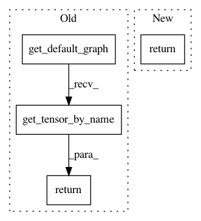

d0b03af329a2b2bf679ae33981f34636ce19690a,deepexplain/tensorflow/methods.py,,deepexplain_grad,#Any#Any#,162
Before Change
@ops.RegisterGradient("DeepExplainGrad")
def deepexplain_grad(op, grad):
mode = tf.get_default_graph().get_tensor_by_name("deepexplain_mode:0")
//mode = tf.Print(mode, [mode], "mode flag: ")
def default():
input = op.inputs[0]
return grad * grad_activation(op.name)(input)
cases = OrderedDict({
tf.equal(mode, 0): (lambda: DummyZero.nonlinearity_grad_override(op, grad)),
tf.equal(mode, 1): (lambda: Saliency.nonlinearity_grad_override(op, grad)),
tf.equal(mode, 2): (lambda: GradientXInput.nonlinearity_grad_override(op, grad)),
tf.equal(mode, 3): (lambda: IntegratedGradients.nonlinearity_grad_override(op, grad)),
tf.equal(mode, 4): (lambda: EpsilonLRP.nonlinearity_grad_override(op, grad)),
})
return tf.case(cases, default=default, exclusive=True)
class DeepExplain(object):
After Change
def deepexplain_grad(op, grad):
global _ENABLED_METHOD_CLASS
if _ENABLED_METHOD_CLASS is not None:
return _ENABLED_METHOD_CLASS.nonlinearity_grad_override(op, grad)
else:
return grad * grad_activation(op.name)(op.inputs[0])
In pattern: SUPERPATTERN
Frequency: 3
Non-data size: 4
Instances
Project Name: marcoancona/DeepExplain
Commit Name: d0b03af329a2b2bf679ae33981f34636ce19690a
Time: 2017-11-03
Author: marco.ancona@inf.ethz.ch
File Name: deepexplain/tensorflow/methods.py
Class Name:
Method Name: deepexplain_grad
Project Name: tensorflow/transform
Commit Name: 998b0e8f1c3ec165fc1ca7b6421c96b1c72ec297
Time: 2018-05-30
Author: tf-transform-dev@google.com
File Name: tensorflow_transform/analyzers.py
Class Name: Analyzer
Method Name: inputs
Project Name: tensorflow/transform
Commit Name: 998b0e8f1c3ec165fc1ca7b6421c96b1c72ec297
Time: 2018-05-30
Author: tf-transform-dev@google.com
File Name: tensorflow_transform/analyzers.py
Class Name: Analyzer
Method Name: outputs